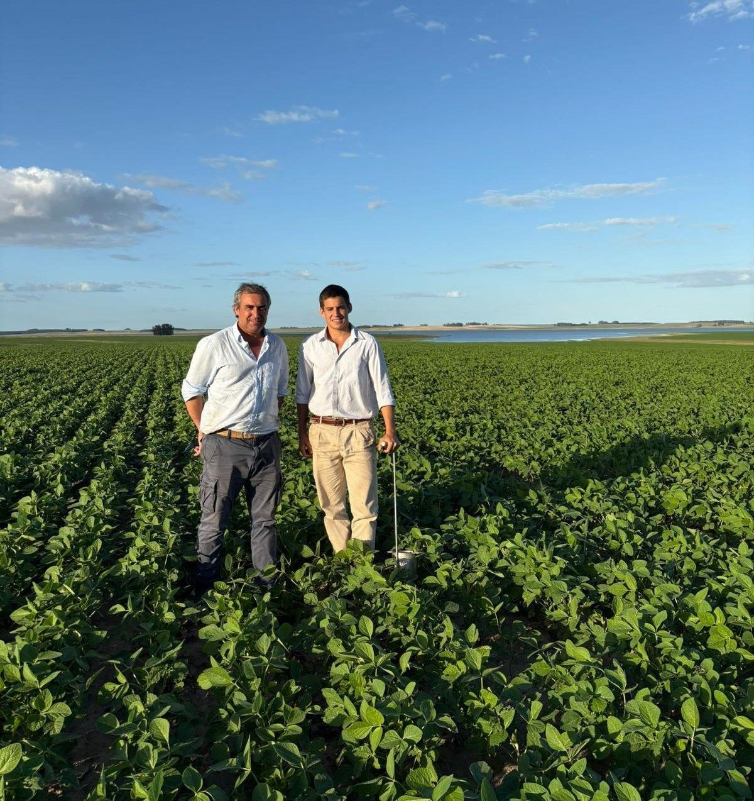
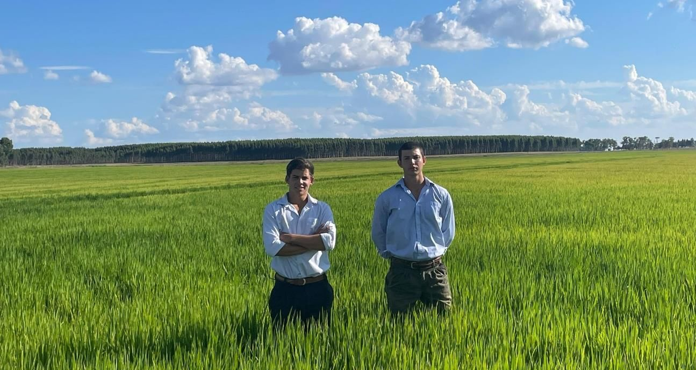
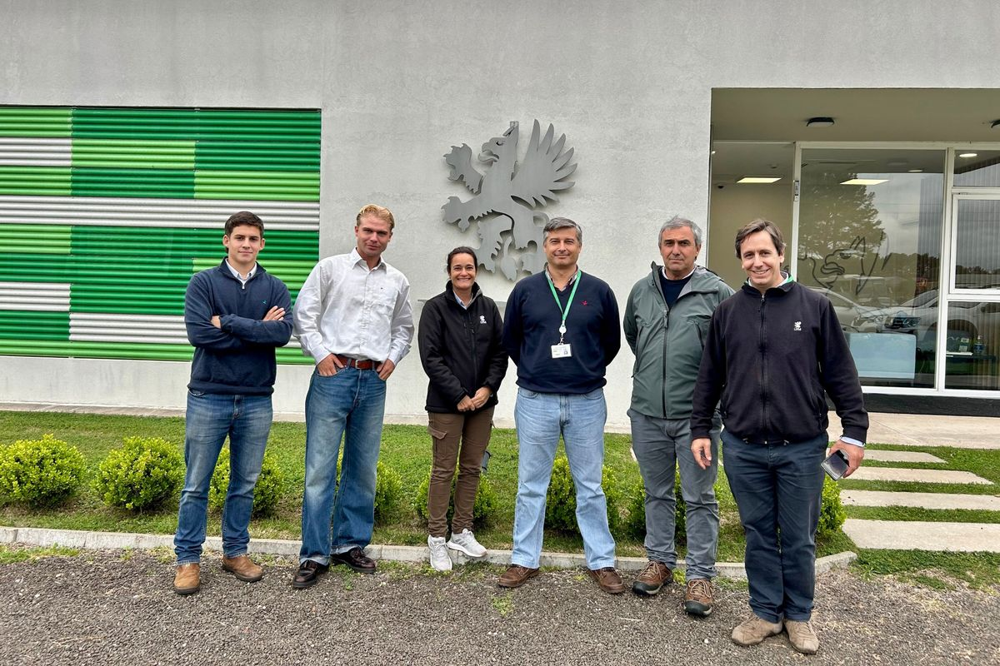
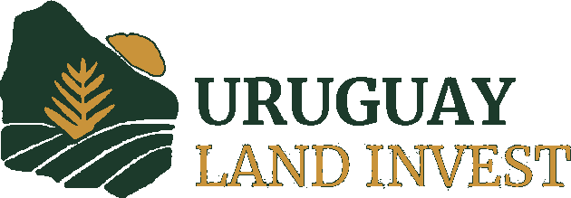
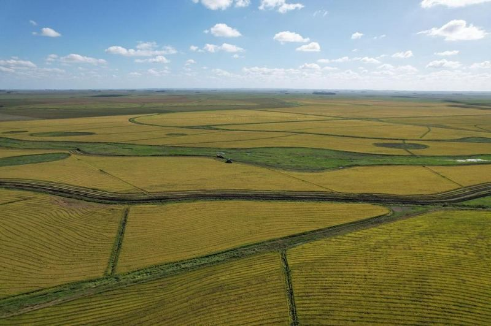
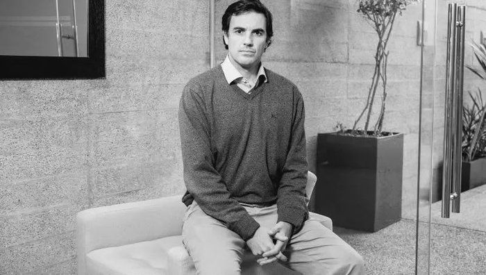
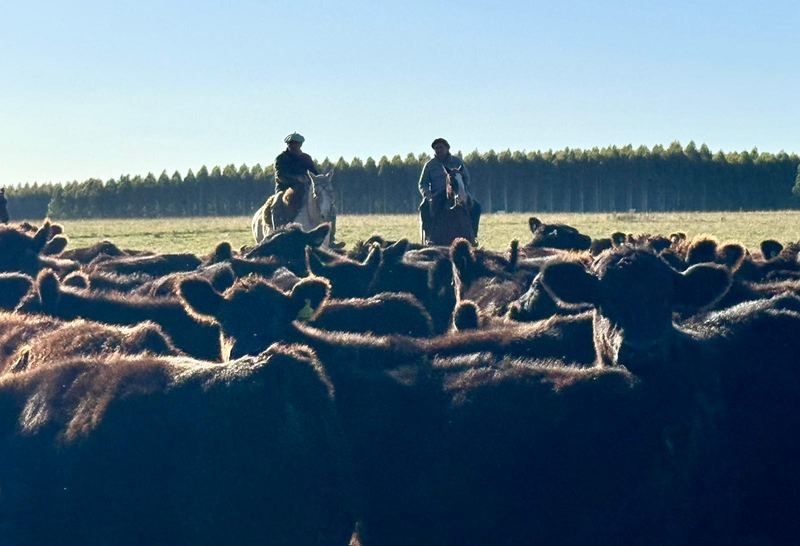

Our roots in Uruguay’s agricultural and forestry sector go back to the early 1990s: three decades working cattle, grain and forestry land through the cycles that actually test an operator.
Over the years, we saw a recurring challenge: international investors interested in Uruguay often lacked a trusted local partner with the experience and network to access the right opportunities and develop their productive potential.
Uruguay Land Invest was built to bridge that gap, combining first-hand agricultural experience with a structured approach to sourcing opportunities, evaluating investments and providing long-term local management.
Based in Montevideo, with a dedicated European presence in Münster, Germany.

We understand your investment objectives, risk profile, capital capacity and asset preferences before making any recommendations.
We identify and present fields that match your profile, with full agronomic and legal analysis completed before any commitment.
Full coordination of purchase, title registration, lease structuring and investment vehicle setup — fully remote if preferred.
Ongoing operator oversight, income collection, regulatory compliance and annual investor reporting — available as an optional managed service.
Our operating team in Uruguay sources, evaluates and manages the land. Our investor relations team works directly with European family offices, funds and advisors, giving investors a single point of contact from the first briefing to annual reporting.
Notarial and legal services are provided through Escribanía García Terra & Gastaldi, led by Daniela Gastaldi, notary public and a member of our team. They are optional: investors may appoint any notary or law firm of their choice. On-the-ground sourcing and operations in Uruguay are carried out by Gorrión del Cielo SAS.

Stay up to date.


The ULI team visited UPM’s research center in Paysandú, where they explained how they develop eucalyptus clones to improve productivity, wood quality, pest and disease tolerance, and rooting. Understanding the science behind forestry assets is central to how we advise investors.
About the center (UPM)
Why global capital is moving into Uruguayan farmland. Our founder’s investment case for the country’s agriculture, forestry and livestock, featured in Agriculture Investment Marketplace.
Read on AIM (in English)
Tomás Fonseca joins Uruguay Land Invest to lead the financial analysis behind every project we bring to market, verifying return assumptions, acquisition costs and cash yield before they reach an investor’s desk.
Meet Tomás
Our farm management service: how we source, structure, run and report on productive land for international investors, keeping full operational control from the ground while the investor retains ownership and every key decision.
Read the document (in English)Tell us about your investment objectives and we will reply within 24 hours to arrange a meeting.